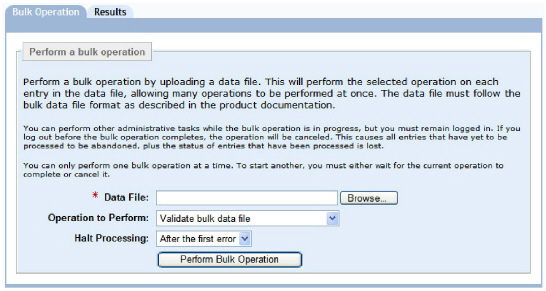
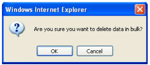

|
IdentityGuard Server 13.0 Administration Guide |
|
IdentityGuard Server 13.0 Administration Guide |
Bulk files imported through the Bulk Operations page of the Administration interface can create, change or delete temporary PINs for multiple users in one operation.
For more information about bulk operations see Perform bulk operations.
To administer temporary PINs for multiple users with bulk operations
1. Create a bulk file (see Create a bulk file).
2. Log in to the Administration interface.
3. In the main menu, click Bulk Operations.
The Bulk Operations page appears.

4. Click the Bulk Operation tab.
5. Click the Browse button to locate the bulk file.
6. Select a bulk operation from the Operation to Perform drop-down list.
● To create temporary PINs in bulk, select Create PINs for users.
● To modify temporary PINs in bulk, select Modify user PINs.
● To delete temporary PINs in bulk, select Delete user PINs.
7. From the Halt Processing drop-down list, select the number of errors to allow before processing stops due to too many errors:
● After the first error — Just one error stops all subsequent operations from being processed.
● For the other options, After 10 errors, After 50 errors, and After 100 errors, the operations that have errors up to the specified number are tracked and not processed. However, all successful operations prior to the specified number of errors threshold are processed. All operations after the processing reaches the maximum number of errors specified are not processed.
8. Click Perform Bulk Operation.
If you selected Delete user PINs, a dialog box appears. Click OK.

The Bulk Operation in Progress pane appears. The size of your bulk operation directly affects the time the operation takes to process. This page indicates the initial status of the operation.
9. (Optional) To view the current status of the bulk operation, click Update Results.
When Entrust IdentityGuard completes the bulk operation, the Results page appears.
10. Click Done to return to the Bulk Operation page.